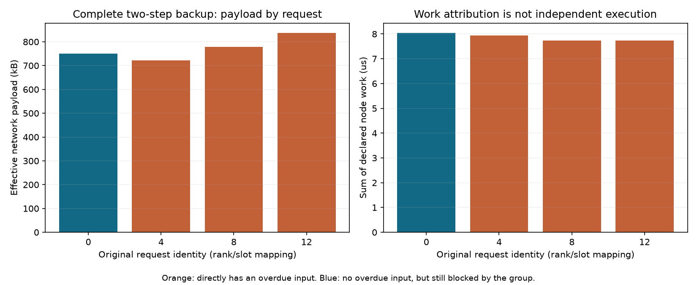

2026-10-30 · 128模拟端点Clos · 五份已保存网络只读 · 零新网络/构建/GPU
恢复粒度：少量缺失为什么卡住整个MoE任务
本例只缺3份首阶段输入，却通过全组完成门限约束全部4个目标请求。完整备用确实重复工作，但“只重做这3个请求”在现有消费者下不能保证提前交付。本轮交付依赖与成本分析工具，为下一步接口修改提供依据，没有新增恢复收益。
承接的强基线与本轮问题
前轮在相同真实专家选择和128端点Clos上，19.030微秒启动完整备用，使局部故障目标从201.866降至142.428微秒，少29.44%；额外有效通信27.51%。同刻直接启动与源确认检查的故障逐包结果相同，成熟早备用已覆盖这部分加速。本轮不再重跑或重新包装这项收益，只核对重复工作能否缩小。
保持四组EP32、每rank每层8专家、E256/Top8/H7168；15份不同路由原件，目标4份/健康11份，原层3/4、两个Decode入口。只读control-normal/control-local、fixed-local、guarded-normal/guarded-local五份网络，全部文件SHA保持。
先分清“未完成”和“超时”
源端判断只读取实际发送/完成回调和已提交图，在19.030微秒之前截断。同纳秒按原生交错顺序保留；接收时间、未来路由结果和包路径只用于事后评价，不输入判断器。
正常任务也有26条pending，来自已推进到的后续通信；它们还没等满期限。故障任务只剩3条pending，却已超时。因此“pending多”或“还有没完成的消息”都不能单独作为故障或备用启动条件。18微秒来自前轮正常214条消息跨度标定，本轮没有改参，也不估计生产误判率。
三个缺失输入都涉及专家56
首轮26条远端输入中，23条已经收到，共332,672字节；另外3条尚未收到，共43,392字节。这3份来自不同请求的选择恰好都指向rank28上的专家56，不是随机生成的热点，但这一小窗口不能代表整个模型长期热点分布。
实际数据最后在86.676微秒到达，最后源确认在90.680微秒到达，当前guarded运行的首Dispatch门限随后释放。两者相差4.004微秒，来自当前完整传输flush口径中保留的源确认义务；它是事件间隔，不能直接宣称为真实通信库可消除的等待。
为什么第4个请求也被卡住
当前图为每rank建立Dispatch门限，每个门限的完成又要求本EP组所有成员的本地依赖完成。专家计算要等这个门限；下一Decode步还要等前一步整图退休。分析工具展开这些真实约束后，三个原SEND确认根或三个原RECV根都能约束32个首层专家节点，并沿后续依赖到达全部4个目标请求的末端。
请求0的6份远端输入都已收到，仍受其他请求的门限约束。它在本次原尝试中的末端完成时间也是201.880微秒；当前结果消费者只接受整个尝试的最终图退休，不能混用3个备用请求和1个原请求便声称142.428微秒完成。若改变流量，必须重新执行共享网络，不能从这份记录拼接反事实时延。
闭包表示“执行结构存在约束路径”，不是每条路径都造成实际时延，也不是可消除延迟。SEND源确认和RECV数据就绪分别保留，没有把ACK当成接收的前驱。分析没有删除任何门限或伪造确认。
有哪些已完成工作可以保留
触发之前28/32个成员已经到达首Dispatch门限，但32个首层专家节点均未issue，也均未完成。完成的声明计算只有4,120纳秒，来自首层attention和pack；23份远端激活已经到达。
因此本例可以讨论复用已到输入和打包结果，不能说已经保留了大量健康专家计算。完整两步备用共111个token→rank贡献包、128次专家贡献，传输3,088,448字节、声明计算31,460纳秒。这些是工作量之和，不是GPU内核独立耗时或端到端时延。

账面节省与可执行优化必须分开
第三行只计三份声明输入/结果和专家工作，不包含其他健康贡献、后续层/步、控制、缓冲和清理；与第一行任务范围不同，不能相减得出“97%优化收益”。第二行排除了请求0的750,464字节和8,040纳秒备用工作，但还没有等价交付方案，也不能把账面差当成实际节省。
已有inflight_helpers可以真实执行一个token在目标rank上的完整专家贡献，且有一次提交与退休记录；它仍不替代原图门限和原SEND/RECV。逻辑贡献先返回不等于原任务已经继续。whole-call模式与helper模式也不能直接混开。
下一步应改什么，如何验证
- 先核查固定通信实现中的数据就绪、通知与消费接口，确定是否允许按token/rank贡献推进。若真实实现仍要求全组完成，就不把删门限作为优化。
- 若接口允许，显式增加应用贡献消费者：按请求、原层、Decode入口、专家集合与输入代际核对，原/备用首份有效结果只消费一次；原连接源确认、图退休和缓冲释放另行完成。
- 原/备用使用隔离缓冲与尝试代际，迟到写不能覆盖已消费或已复用槽；正常与帮助计算共用同一物理GPU队列，全部通信共用原128端点Clos。
- 在相同消费语义与资源下比较原地SR、成熟完整早备用和贡献补齐，保留全部原结果及清理。只有目标收益保持、重复工作下降且正常开销可接受，才继续讨论方法差异和投稿。
候选研究点可以收敛为“可见进展约束下，按缺失贡献补齐，并隔离迟到结果的应用推进”。这仍是待验证机制，不能凭本轮依赖图证明新颖性或性能。当前最小缺项是可替代贡献驱动的真实应用消费接口。
验证和边界
7项CPU规则测试覆盖跨rank/跨步传播、无门限反例、缺前驱/环/非法成员以及源确认前缀；真实输入/图/源事件16项篡改拒绝通过。五份旧网络不变，零新网络、构建、依赖修改、下载或GPU。小型CPU图不替代128端点网络，闭包不模拟新的执行。
专家选择是真实数据，消息布局与计算是声明，没有激活张量、权重或数值等价验证；只含两层两个Decode步，不是完整671B、p99、稳态服务或商业收益。图已查看；网页做静态链接/资源核查，不声称浏览器渲染验收。
分析与依赖路径 · 逐请求工作 · 缺失贡献 · 拒绝检查 · 冻结输入 · 命令与资源 · 交付核查 · 结论 · 复现方法 · 执行前约定 · 前轮强基线